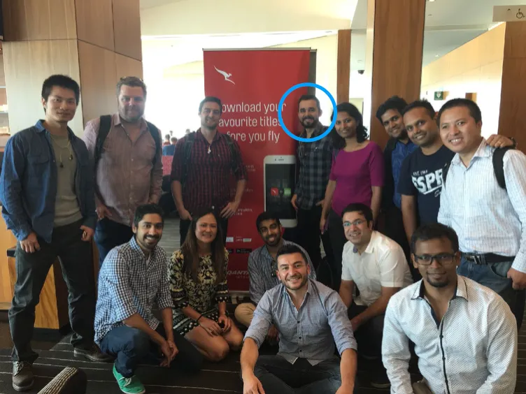
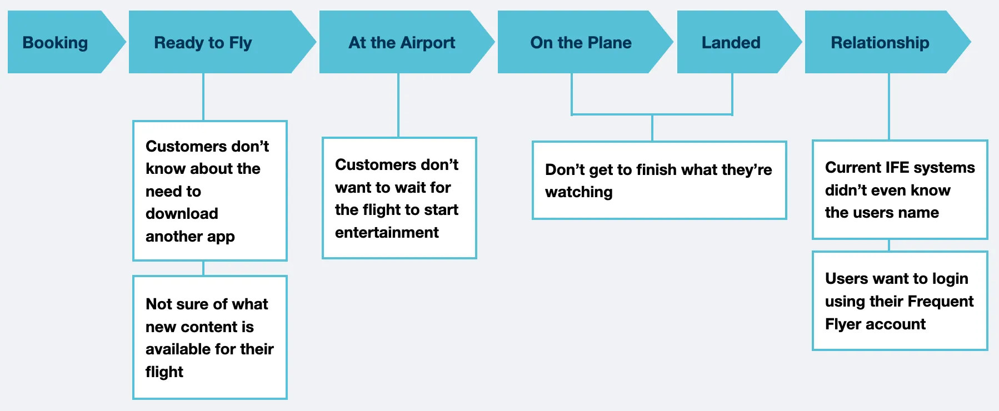
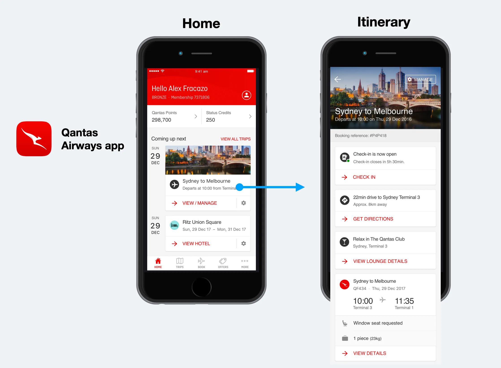
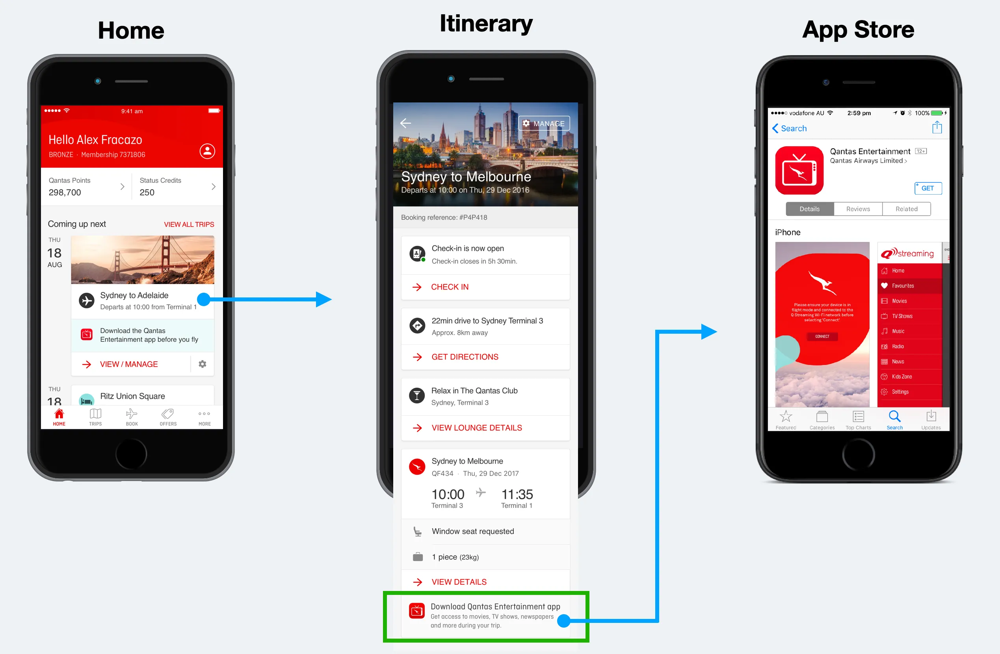
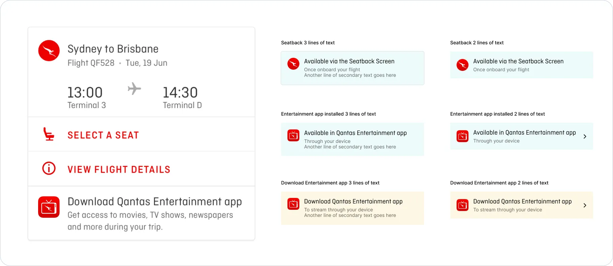
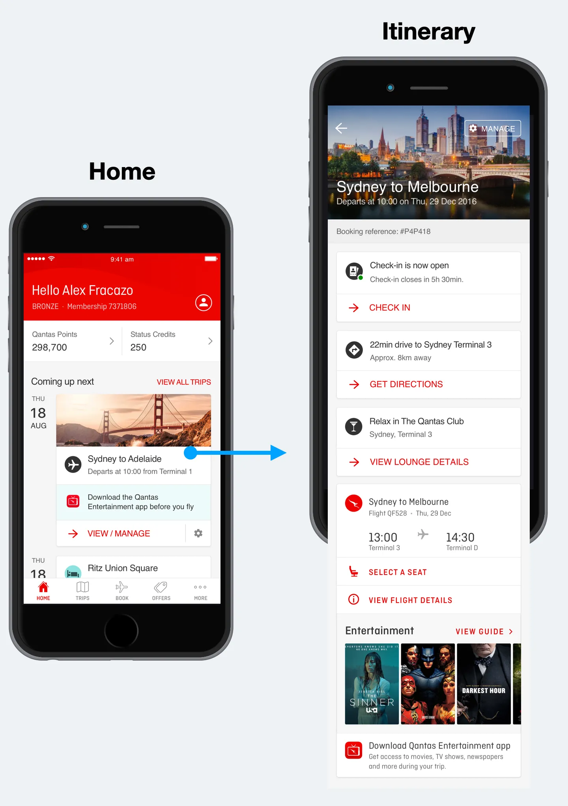
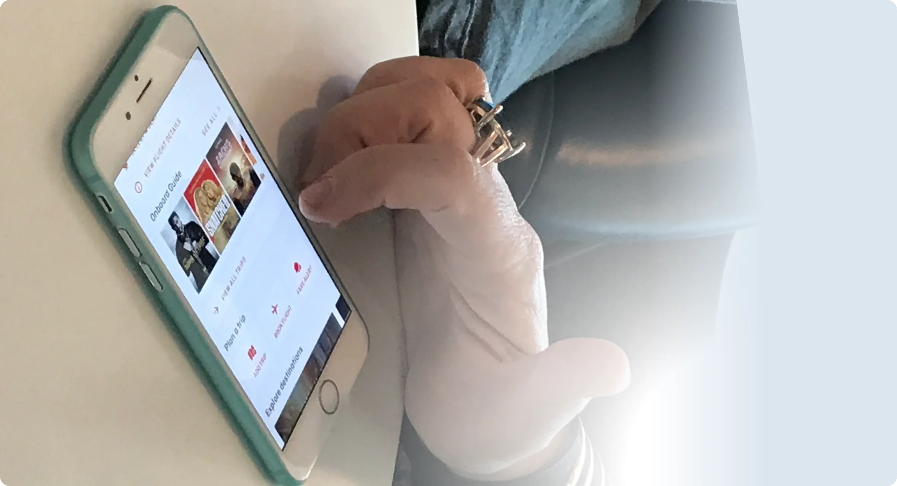

Bringing Entertainment to Qantas Airways app
How to increase app downloads by +70% by connecting entertainment services in the flagship app "Qantas Airways"

 Summary
Summary
Qantas is on a mission to be the global leader in travel. One of the key factors in achieving this is to bring the entertainment experience into the top consideration for travellers to choose Qantas. The key success metric is the increased use of their entertainment app.
The Work
The Challenge
Qantas provides a wide range of inflight entertainment systems, using multiple providers for aircraft hardware. Traveller behaviour is moving towards bringing personal devices on board. We've seen more and more travellers using their personal devices to stream content as well as switch devices/systems at will.
Qantas already has an appealing seatback screen experience but lacks a hassle-free personal device experience. Building a better experience for entertainment using the Qantas Airways app is a great extension of the company's mission, while managing to leverage its existing systems and providers, increase its value for customers and provide the company with another revenue stream.
The Team & My Role
I had heaps of fun working with these folks, under the Qantas Digital Direct Team. I was leading the design for the Entertainment Squad. I had also collaborated with the Travel Squad, Emerging Channels Squad, Loyalty Squad, and Smart Retail Squad.
Key milestones
- Lead discovery research & ideation sessions
- Present and showcase my findings, prototypes, visual designs and rationales to the Qantas Digital Direct team every 2 weeks
- Lead informal design reviews
- Organise and run guerrilla testing at the airport
Research & Discovery
Some known facts about Qantas product offering that is relevant for entertainment:
1. Qantas Airways app (Flagship) - 1.17 million active monthly users
- Utility
- Check-in, select seat, access boarding pass or manage the trip
- Book flights, hotels, request an Uber and more
2. Qantas Entertainment app (Streaming) - 107k active monthly users
- Stream Entertainment to a customer's personal device
- Watch or listen to movies, TV shows & boxsets, podcasts, and games
Leveraging insights and data
Focus on deeply understanding the problem by leveraging insights from other teams. I started mapping the customer journey and adding important touch points where users had an action to complete.
Mapping the customer journey
In addition to analysis of previous research conducted by the Qantas team including customer journeys, personas and competitor analysis, we also had free access to the Qantas Lounge to interview travellers. Here is what we found:
Defining the problem
Travellers don't know about the Entertainment app until they get on board the flight
A known fact for Qantas was that 35% of trips are synced or added to the "Qantas Airways app" one week before departure. Our solution hypothesis was that there is an opportunity to engage travellers through the Qantas Airways app, and this would lead to increased use of the entertainment app.
Experiment:
Incorporate a message about the Qantas Entertainment app in the "flight card" of the Qantas Airways app
Main Metric:
The Qantas Entertainment app downloads from the App Store
User flow - Original version
Exploring Solutions
Every week the Qantas design team holds a sparring/jam session, with the aim to understand what each designer is working on and how they are collaborating on each project, and also to establish our design experience principles used across the Qantas products. Here's how I connected those principles to the solutions presented:
Simple and streamlined
Focus on primary needs without distractions
Connect experience across channels
Start, continue and complete tasks across platforms
Leverage device strengths
Supercharge experiences utilising channel capabilities
Respect context
Give the user the right experience at the right time
Design & Experience
One of our solutions was to identify whether users have the Qantas Entertainment App installed on their device, and if not, to surface a distraction-free notice:

User Flow - Redesigned Version
Form Factor Notice & Fleet Constraints
The thought process for creating this "notice" was based on which model of aircraft the traveller was flying. Qantas operates a fleet of 126 aircraft: Airbus A380, Airbus A330, Boeing 737 and Boeing 787. Our team had to understand the basics to create this experience. So we considered four different situations regarding the aircraft system:
- Aircraft only has the seatback screen
- Aircraft only has wi-fi streaming enabled
- Aircraft has both (seatback and streaming services)
- Aircraft has neither (hide the notice)
The feature needed to understand which system was available on the aircraft and also whether the user had the app installed on their device to adjust the message accordingly.
Experiment Results
We collect the following data 24 hours after launch:
- 27k unique visitors tapped on the 'Download Qantas Entertainment app'
- 9k unique visitors tapped on 'Open Qantas Entertainment app'
Progressive Releases
With the positive results of our experiment, we decided to launch more features that we believed could solve other user-identified pain points and also get travellers engaged and excited about their trip. We start by showing the 5 latest movies available for their flight.
Media Content
We also decided to explore a page structure that would accommodate:
- Movies
- TV Shows
- Games
- Music
Scaling up to the Home Page
During this process, the Qantas Airways app was also improved by another team on the Travel Squad. Their objective was to surface the itinerary page on the home page so that users wouldn't need to tap on a card to see what's important for their flight.
This project directly benefited us when released. The entertainment design pattern I designed worked perfectly with this change, users would see what entertainment was available for their flight on the Qantas Airways app home page, which had a huge impact on our team metrics.
Progressive Design Evolution over Releases
- Surface important user actions
- Cheap to implement and roll-out
- A consistent design pattern across app releases
- High learnability due to user recognition

Final Results
- Entertainment is now on the Qantas Airways app home page
- Informing 1.17 million active monthly users of the entertainment offering for their flight
- App Store downloads: Start of the project (2017) = +58%, After redesign (~2018) = +70%
Conclusion
Beyond building a simple design pattern, we allow passengers to discover what's showing on board their next flight. This feature delivers awareness of what entertainment is available when travelling with Qantas and further strengthens the passengers' engagement with the app and the Qantas brand.
After working many months, participating in all stages of this project — see also the redesign of Qantas Entertainment app case study, which was fundamental for the success of the business. I'm excited to see how many improvements we made as a team, creating something really exciting, and a product we are all proud of.

Protecting Data Privacy
The case study shows fictitious figures, allowing the necessary contextual information to enable the evaluation of the methodologies used.
Up Next

Bringing Visibility to Workers' Status
How we changed user behaviour by design and increased bookings by +12%

A Greenfield app for the Australian ETA Visa
How I automated data entry and improved the visa application experience
Reimagining the Entertainment Experience
Building a brand experience for Qantas Entertainment